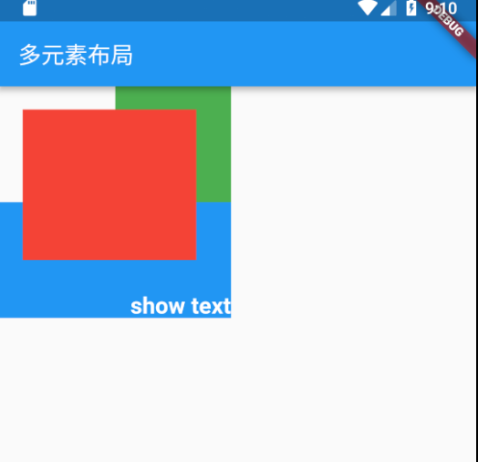

Flutter 常用布局-多元素布局2
上次介绍了多元素布局中的Flex布局方式，也是最常用的布局方式。这次介绍下其它类型的多元素布局。
Stack 帧布局
Stack布局很好理解，可以参考Android中的FrameLayout，里面的子控件都是可以层叠展示的。但是相对于帧布局，还是有一些自己的特点。
布局规则
- 首先获取子控件的大小，来确定本身控件的大小，后面的位置展示、对齐等都是根据本身控件大小进行布局。
- 按照顺序进行子控件绘制，第一个子控件被绘制在最低端。
- 判断子控件是positioned还是non-positioned，所谓positioned就是控件向下包含的子控件是否存在Positioned控件，并且这些其中的控件中只能为StatelessWidget或StatefulWidget控件。
- 如果子控件为positioned，展示位置通过设置的top、bottom、right、left属性来确定，如果这四项都未设置，则使用aligment来绘制位置。
- 如果子控件为non-positioned，则使用aligment来绘制位置，默认为左上角。
Stack字段说明
- alignment 子控件对齐方式，non-positioned情况下才会生效，默认为
AlignmentDirectional.topStart - textDirection 文本方向，无需处理
- fit 指定如何设置non-positioned类型的子控件尺寸，默认为loose，表示子控件宽松取值。其它还有expand，子控件尽可能地占用空间；passthrough 子控件的约束条件不变。
- overflow 子控件超出部分如何处理，默认为裁剪(Overflow.clip)
示例
1 | Stack( |
结果如下：

IndexedStack
IndexedStack是Stack的子类，也就是一种特殊的Stack.
IndexedStack的字段多了index，用来指定哪个子控件可见，其他子控件都是不可见的。因为只是不可见，所以Stack的尺寸仍然不变。
IndexedStack可以使一个区域层叠不同界面，使用时通过控制只展示需要的界面，类似Tab效果。